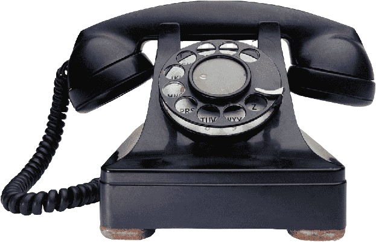

1. The Telephone — 1876
The Scotsman Alexander Graham Bell worked as a speech and hearing expert (his mother and wife were both deaf) and, seeking to improve the telegraph, researched voice transmission until, in 1876, he patented the telephone. This device revolutionised communication by allowing instant speech even over long distances. In its early days, to establish a call, a person had to manually connect the wires, and this continued until the creation of the telephone network. It is one of the most significant advances of the Second Industrial Revolution, to the extent that it marks the beginning of modern society. Without it, the world would not exist as we know it today: it laid the foundations for mobile telephony.
